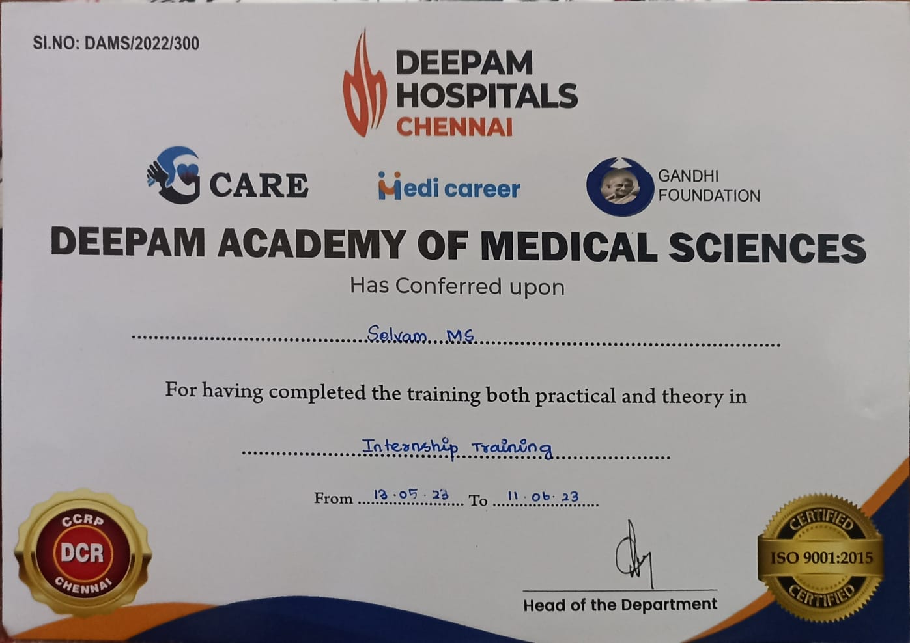
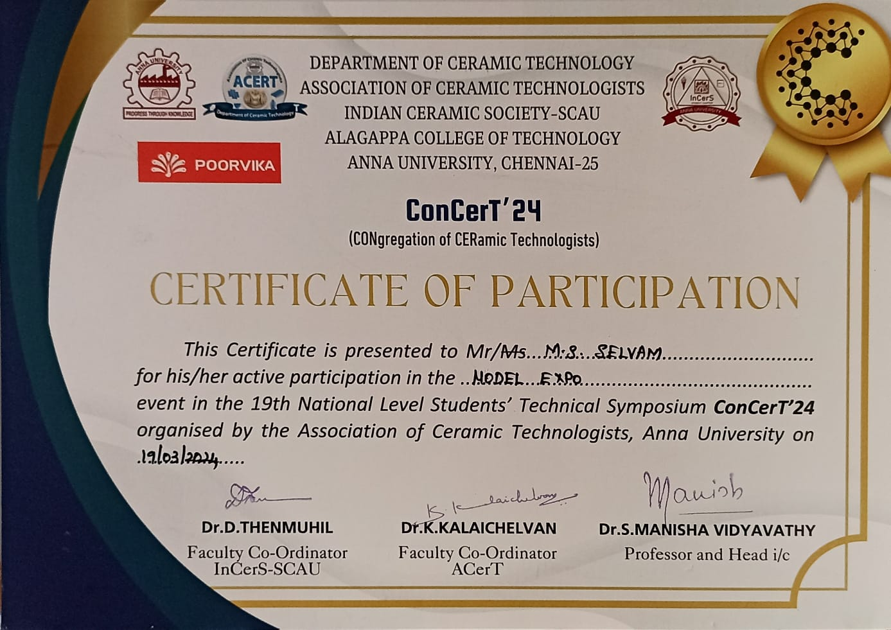
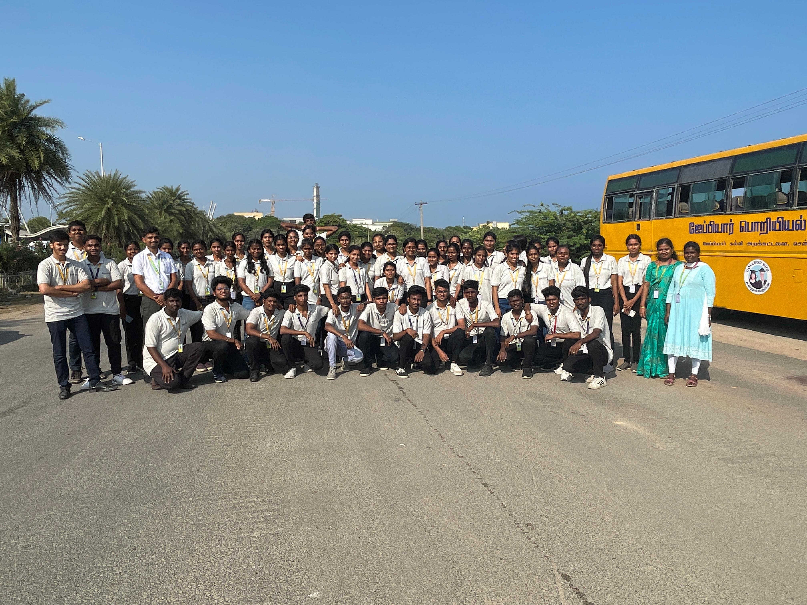

Experience
Internship Experience
peacock hospital
They are learned basic equipment's and their working principals like x-ray,CT,ECG,Ultrasound machine
Deepam hospital
They are visited Departments like Radiology,ICU,Operation theater,Clinical laboratory,Diagnosis

Competition Experience
ConCerT24
Greetings everyone! I'm thrilled to announce that our team, participated in ConCerT24, the 19th National Level Technical Symposium organized by the Association of Ceramic Technologists at Alagappa College of Technology, Anna University, on March 19,2024. In the Model Expo event, which provided us with invaluable learning experiences. our project will be a wearable real time heart disease dedication the heart States will check in web service in real time I extend my heartfelt gratitude to my teammates, Hema Kannan and Amudhaveeran, for their outstanding contributions and unwavering commitment

Electrothon'24
Hello_guys, recently I've participated in an inter-college competition on Electrothon '24 connected by Chennai Institute of Technology! Collaborating with teams, we explored concepts shaping technology's future Inspired by creativity, teamwork, and innovation passion Always striving for excellence and pushing the limits of what is possible. Let's work together to create something truly groundbreaking!
Industrial Visit
An enriching experience at the Madras Atomic Power Station, Kalpakkam! Explored the fascinating process of electricity generation through nuclear fissioning and also discovered the world of clean energy which is very eco-friendly. The initiatives taken in this 'Atomic power station' made this plant stand out Grateful to our biomedical staffs for this eye-opening opportunity.
